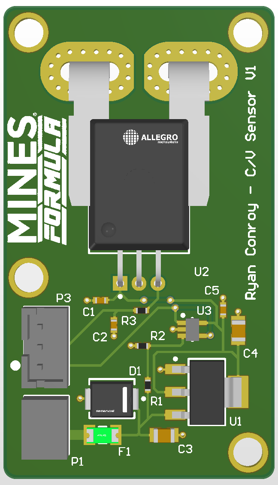

Current Voltage Sensor
The Problem: Safety critical boards such as BSPD and Shutdown Circuit require accurate readings of battery supplied current and voltage within the EMF1 EV Car
The Solution: A Hall Effect Sensor, and Op Amp Controlled Voltage
Breaking it Down:
- ACS758KCB-150B Hall-effect sensor measures bidirectional current up to ±150A without breaking the circuit
- Resistor divider + MCP6001 op-amp buffer scales and reads 0-15V bus voltage
- Board is self-powered directly off the sensed bus via an onboard LDO regulator
- RC filtering on the current sensor output; TVS diode and polyfuse protect the input
